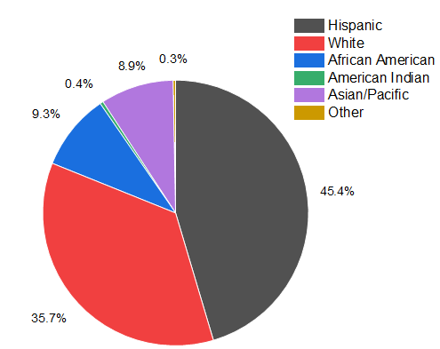

Farbiges 2D-Kreisdiagramm zu einer Bevölkerungsstudie
2D-Pie-Chart
Zusammenfassung
Dieses Tutorial zeigt Ihnen, wie Sie ein 2D-Kreisdiagramm erstellen und benutzerdefiniert anpassen.
-
Origin-Version mind. erforderlich: Origin 2020
Was Sie lernen werden
Dieses Kapitel zeigt Ihnen, wie Sie:
- Ein farbiges 2D-Kreisdiagramm erstellen
- Das Kreisdiagramm mit Minisymbolleisten und dem Dialog Details Zeichnung benutzerdefiniert anpassen
Schritte
- Erstellen Sie ein neues Arbeitsblatt, in das Sie die Beispieldaten einfügen, die hier gezeigt werden.
- Markieren Sie Spalte B und wählen Sie im Menü Zeichnen > Einfache 2D: Farbiges 2D-Kreisdiagramm, um ein 2D-Kreisdiagramm zu zeichnen.
- 
- Klicken Sie mit der rechten Maustaste auf die Legendeund drücken Sie die Taste Entfernen, um das Legendenfeld zu löschen.
Schnelle benutzerdefinierte Anpassung mit Minisymbolleisten
- Klicken Sie auf das Kreisdiagramm und in der Minisymbolleiste auf die Schaltfläche Füllfarbe, um die Farbauswahl zu erweitern. Wechseln Sie zur Registerkarte Nach Punkten und wählen Sie in der Farbliste die Option "D02 Maple".
- Die Farbliste, die Sie unten ausgewählt haben, wird direkt auf die Segmente angewendet. Klicken Sie auf der immer noch angezeigten Minisymbolleiste auf die Schaltfläche Datenbeschriftungen zeigen, um in der Auswahlliste Kategorien auszuwählen.
- Jetzt werden sowohl Prozentanteile als auch Kategorien als Beschriftungen für die Kreissegmente gezeigt. Klicken Sie auf eine Stelle auf der weißen Fläche, um die Minisymbolleiste des gesamten Kreisdiagramms zu verlassen.
- Klicken Sie zweimal auf das Segment "Hispanic", um dieses Segment separat auszuwählen. Klicken Sie in der Minisymbolleiste auf die Schaltfläche Explodieren, um dieses Segment von dem gesamten Kreis abzurücken.
Weitere Anpassungen mit dem Dialog Details Zeichnung
- Klicken Sie zum Öffnen des Dialogs Details Zeichnung doppelt auf das Kreisdiagramm. Gehen Sie bei ausgewählter Zeichnung zur Registerkarte Muster und setzen Sie Rahmenfarbe auf Kein und Transparenz auf 20. Klicken Sie auf die Schaltfläche Anwenden, um die Einstellungen anzuwenden.
- Gehen Sie zur Registerkarte Kreisgeometrie und setzen Sie im Bedienelement Drehung die Startposition (Grad) auf 75. Aktivieren Sie das Kontrollkästchen Gegen den Uhrzeigersinn.
Bitte beachten Sie, dass Sie auch die Schaltflächen Drehung im Uhrzeigersinn  und Drehung gegen den Uhrzeigersinn
und Drehung gegen den Uhrzeigersinn  in der Minisymbolleiste (siehe den Screenshot in Schritt 5) verwenden können, um das Kreisdiagramm Schritt für Schritt zu drehen. Jeder Klick dreht das Kreisdiagramm um 10 Grad.
in der Minisymbolleiste (siehe den Screenshot in Schritt 5) verwenden können, um das Kreisdiagramm Schritt für Schritt zu drehen. Jeder Klick dreht das Kreisdiagramm um 10 Grad.
- Gehen Sie zur Registerkarte Beschriftungen und setzen Sie unter der Gruppe Verbindungslinien Verbinden auf 2-Segment Polylinie und die Prozent auf 50.
- Klicken Sie auf OK, um den Dialog zu schließen. Ziehen Sie die Beschriftungen weiter, damit sie sich nicht überschneiden. Fügen Sie einen Titel zum Diagramm hinzu, um am Ende folgende Grafik zu erhalten:
Beispieldaten
Öffnen Sie ein neues Arbeitsblatt und klicken Sie entweder auf diesen Link (http://www.originlab.com/ftp/graph_gallery/data/2D_Pie_Chart.txt) und kopieren Sie die Daten aus Ihrer Browserseite; oder markieren Sie die Daten in de Tabelle unten und kopieren Sie sie.
Klicken Sie auf die leere Datenzelle in Zeile 1, Spalte A(X) und fügen Sie die kopierten Daten ein.
| A(X) |
B(Y) |
C(Y) |
| Hispanic |
45,4 |
1 |
| White |
35,7 |
18 |
| African American |
9,3 |
19 |
| American Indian |
0,4 |
20 |
| Asian/Pacific |
8,9 |
24 |
| Other |
0,3 |
18 |